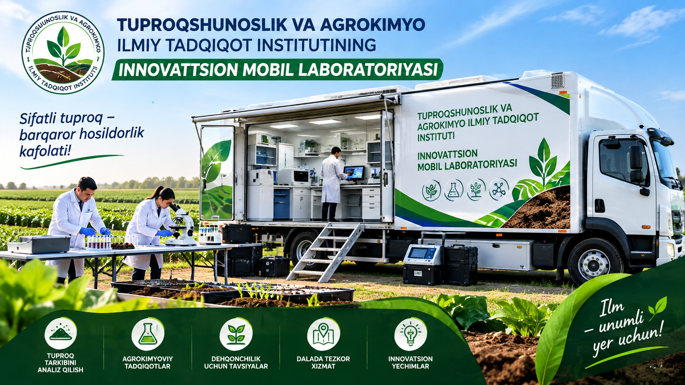
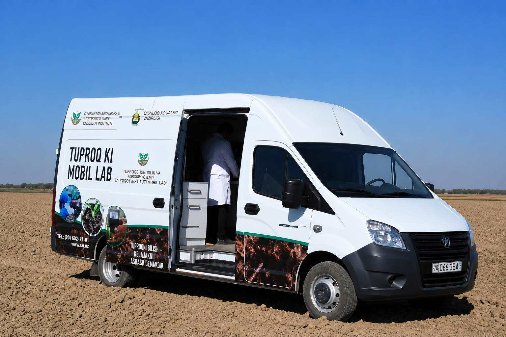
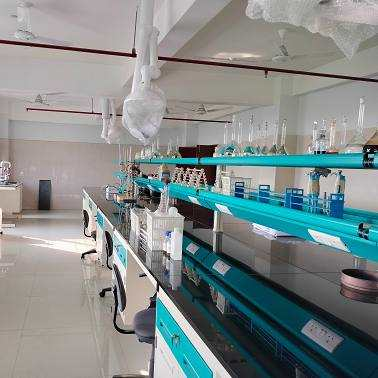
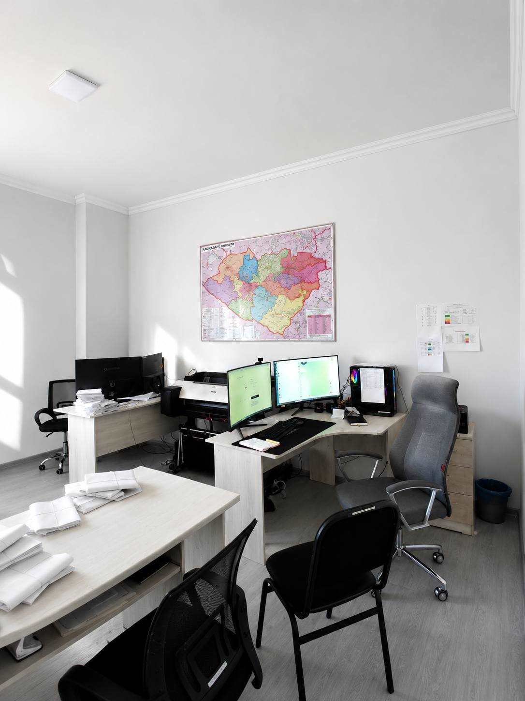
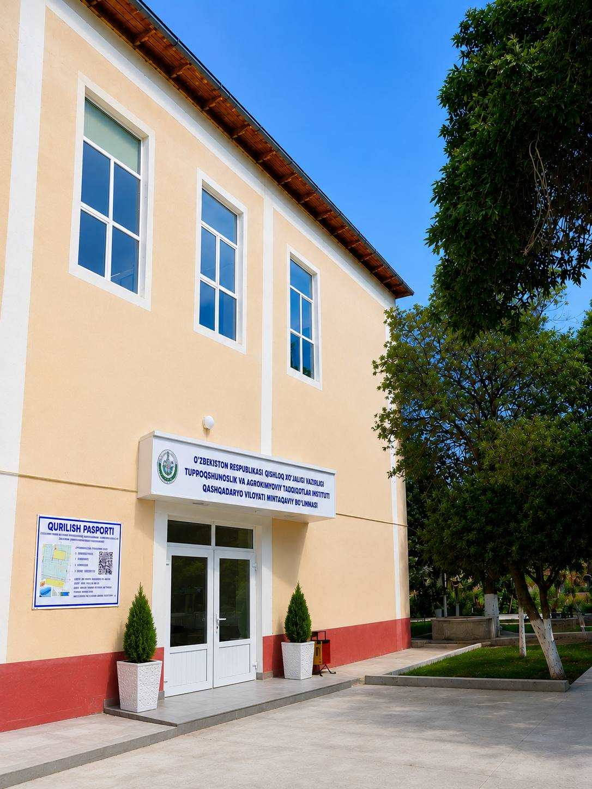

Direktor
Bo'riyev Hikmatillo Ruzimurodovich
Qashqadaryo bo‘linmasi rahbariyati.
Tuproqshunoslik va agrokimyoviy tadqiqotlar instituti
Qashqadaryo shahar va tumanlaridan olingan namunalarni agrokimyoviy va mexanik tahlil qilamiz, amaliy tavsiyalar tayyorlaymiz.
Haqida
Qishloq xo‘jaligi vazirligi tizimidagi Tuproqshunoslik va agrokimyoviy tadqiqotlar institutining Qashqadaryo mintaqaviy bo‘linmasi. Viloyatdagi shahar va tumanlardan olingan tuproq namunalarini tahlil qiladi, agrokimyoviy kartogrammalar va amaliy tavsiyalar tayyorlaydi. Manzil: Qarshi, Ravoq MFY, Islom Karimov ko‘chasi, 62-uy (VMQ-389, 19.07.2022).
Xizmatlar
Asosiy tahlil yo‘nalishlari — dala va laborator natijalar asosida.
N-P-K, pH, organik modda va ozuqa rejimini baholash.
Qum, chang va loy ulushlari; USCS klassifikatsiyasi.
Optimal namlik, maksimal zichlik va yuk ko‘tarish ko‘rsatkichlari.
Tuman/shahar kesimida laborator hisobotlar va amaliy yo‘riqnoma.
Galereya
Laboratoriya, dala ishlari va tadbirlar.





Rahbariyat
Direktor
Qashqadaryo bo‘linmasi rahbariyati.
Videolar
Tuproqshunoslik va agrokimyo bo‘yicha tanlangan videolar.


Aloqa
Telefon, email va manzil. Savol yoki buyurtma uchun murojaat formasini to‘ldiring.
Telefon
+998 71 246-09-50Manzil
Qarshi, Ravoq MFY, Islom Karimov ko‘chasi, 62-uy
Xaritada ko‘rishMurojaat
Savol yoki buyurtma uchun formani to‘ldiring.